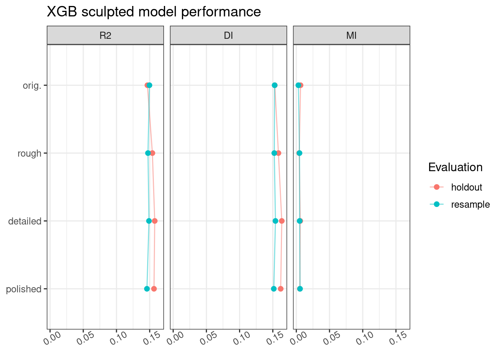
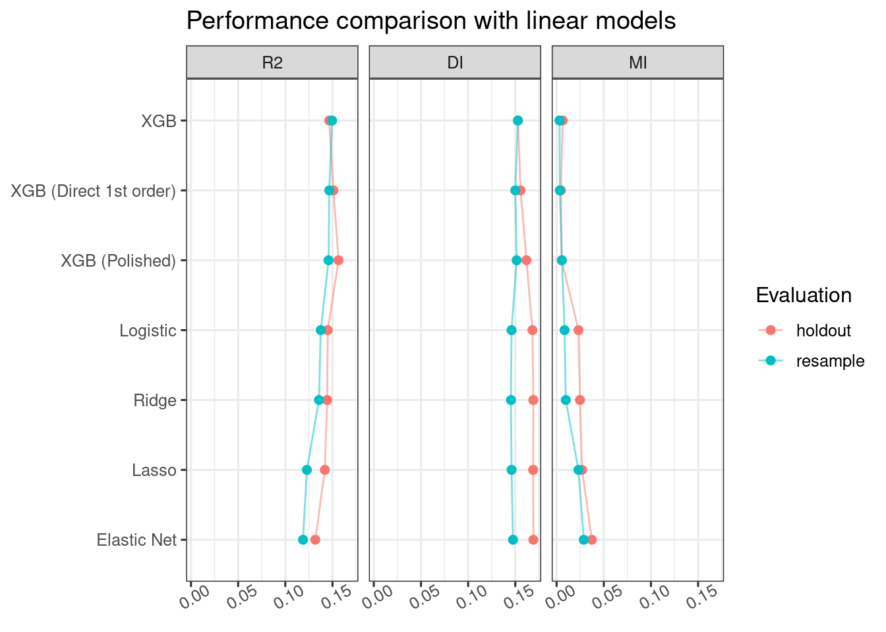
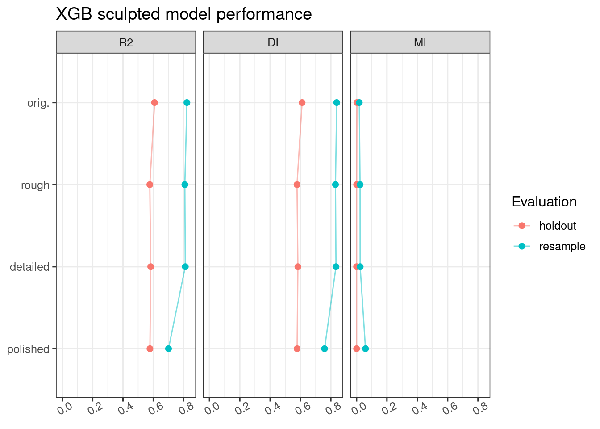
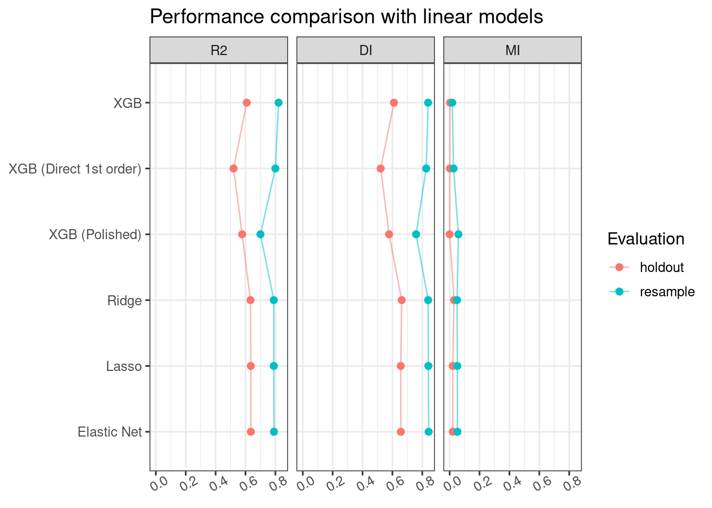

Show the code
library(dplyr)
library(forcats)
library(stringr)
requireNamespace("DT")
source(here::here("R", "0_setup.R"))
theme_set(theme_bw(base_size = 12))library(dplyr)
library(forcats)
library(stringr)
requireNamespace("DT")
source(here::here("R", "0_setup.R"))
theme_set(theme_bw(base_size = 12))dataset_to_summarize <- c("compas", "bike")
separate_sculpt_bayes <- function(data) {
data %>%
# parse `model` and extract `-sculpt_*`, only keep * part
mutate(
sculpt = model %>% str_extract("-sculpt_\\w+$") %>% str_remove("-sculpt_"),
sculpt = if_else(is.na(sculpt), "orig.", sculpt),
sculpt = factor(sculpt, levels = c("orig.", "rough", "detailed", "polished")),
tune_bayes = if_else(str_detect(model, "_bayes"), TRUE, FALSE),
model_type = model %>% str_remove("-sculpt_\\w+$") %>% str_remove("_bayes$")
) %>%
relocate(model_type, tune_bayes, sculpt, .after = model)
}fls <- list.files(storage_folder, pattern = "metrics-ncv")
names(fls) <- fls
res_resample <- map_dfr(fls, load_metrics, .id = "id") %>%
mutate(
dataset = id %>% str_extract("^\\w*-") %>% str_remove("-$"),
model = id %>% str_remove("-metrics-ncv.csv$") %>% str_remove(paste0("^", dataset, "-"))
) %>%
select(dataset, model,
any_of(c("roc_auc", "mn_log_loss", "rsq", "R2",
"DI", "MI", "R2C1", "r2C1", "rsq_trad", "rmse",
"R2_ll", "DI_ll", "MI_ll"))) %>%
separate_sculpt_bayes() %>%
filter(dataset %in% dataset_to_summarize) %>%
arrange(dataset, model, sculpt)
fls2 <- list.files(storage_folder, pattern = "metrics-holdout")
names(fls2) <- fls2
res_hd <- map_dfr(fls2, load_metrics, .id = "id") %>%
mutate(
dataset = id %>% str_extract("^\\w*-") %>% str_remove("-$"),
model = id %>% str_remove("-metrics-holdout.csv$") %>% str_remove(paste0("^", dataset, "-"))
) %>%
select(dataset, model,
any_of(c("roc_auc", "mn_log_loss", "rsq", "R2",
"DI", "MI", "R2C1", "r2C1", "rsq_trad", "rmse",
"R2_ll", "DI_ll", "MI_ll"))) %>%
separate_sculpt_bayes() %>%
filter(dataset %in% dataset_to_summarize) %>%
arrange(dataset, model, sculpt)plot_tune_bayes <- TRUE
res_resample_plot <-
res_resample %>%
arrange(dataset, model_type, tune_bayes, sculpt) %>%
pivot_longer(any_of(c("R2C1", "DI", "MI")),
names_to = "metric", values_to = "value") %>%
mutate(metric = factor(metric, levels = c("R2C1", "r2C1", "DI", "MI", "rsq_trad", "rmse")),
metric = fct_recode(metric, R2 = "R2C1", r2 = "r2C1"))
res_hd_plot <-
res_hd %>%
arrange(dataset, model_type, tune_bayes, sculpt) %>%
pivot_longer(any_of(c("R2C1", "DI", "MI")),
names_to = "metric", values_to = "value") %>%
mutate(metric = factor(metric, levels = c("R2C1", "r2C1", "DI", "MI", "rsq_trad", "rmse")),
metric = fct_recode(metric, R2 = "R2C1", r2 = "r2C1"))
res_plot <-
bind_rows(res_hd_plot %>% mutate(eval = "holdout"),
res_resample_plot %>% mutate(eval = "resample")) %>%
filter(tune_bayes == plot_tune_bayes)
res_plot_compas <- res_plot %>% filter(dataset == "compas")
res_plot_bike <- res_plot %>% filter(dataset == "bike")res_plot_compas %>%
filter(model_type == "xgb") %>%
ggplot(aes(x = value, y = sculpt, colour = eval)) +
geom_path(aes(group = eval), alpha = 0.5) +
geom_point(size = 2) +
facet_grid(cols = vars(metric)) +
scale_y_discrete(limits = rev(levels(res_hd$sculpt))) +
labs(
title = "XGB sculpted model performance",
colour = "Evaluation"
) +
theme(
axis.text.x = element_text(angle = 30),
axis.title = element_blank()
)
models_to_plot_compas <-
tribble(~model_type, ~sculpt, ~mod_lab,
"xgb", "orig.", "XGB",
"xgb_1_order", "orig.", "XGB (Direct 1st order)",
"xgb", "polished", "XGB (Polished)",
"logistic", "orig.", "Logistic",
"log_ridge", "orig.", "Ridge",
"log_lasso", "orig.", "Lasso",
"log_elastic", "orig.", "Elastic Net") %>%
mutate(mod_lab = fct_inorder(mod_lab))
res_plot_compas %>%
inner_join(models_to_plot_compas, by = c("model_type", "sculpt")) %>%
arrange(mod_lab) %>%
ggplot(aes(x = value, y = mod_lab, colour = eval)) +
geom_path(aes(group = eval), alpha = 0.5) +
geom_point(size = 2) +
facet_grid(cols = vars(metric)) +
scale_y_discrete(limits = rev(levels(models_to_plot_compas$mod_lab))) +
labs(
title = "Performance comparison with linear models",
colour = "Evaluation"
) +
theme(
axis.text.x = element_text(angle = 30),
axis.title = element_blank()
)
res_plot_bike %>%
filter(model_type == "xgb") %>%
ggplot(aes(x = value, y = sculpt, colour = eval)) +
geom_path(aes(group = eval), alpha = 0.5) +
geom_point(size = 2) +
facet_grid(cols = vars(metric)) +
scale_y_discrete(limits = rev(levels(res_hd$sculpt))) +
labs(
title = "XGB sculpted model performance",
colour = "Evaluation"
) +
theme(
axis.text.x = element_text(angle = 30),
axis.title = element_blank()
)
models_to_plot_bike <-
tribble(~model_type, ~sculpt, ~mod_lab,
"xgb", "orig.", "XGB",
"xgb_1_order", "orig.", "XGB (Direct 1st order)",
"xgb", "polished", "XGB (Polished)",
"lm_ridge", "orig.", "Ridge",
"lm_lasso", "orig.", "Lasso",
"lm_elastic", "orig.", "Elastic Net") %>%
mutate(mod_lab = fct_inorder(mod_lab))
res_plot_bike %>%
inner_join(models_to_plot_bike, by = c("model_type", "sculpt")) %>%
arrange(mod_lab) %>%
ggplot(aes(x = value, y = mod_lab, colour = eval)) +
geom_path(aes(group = eval), alpha = 0.5) +
geom_point(size = 2) +
facet_grid(cols = vars(metric)) +
scale_y_discrete(limits = rev(levels(models_to_plot_bike$mod_lab))) +
labs(
title = "Performance comparison with linear models",
colour = "Evaluation"
) +
theme(
axis.text.x = element_text(angle = 30),
axis.title = element_blank()
)
res_resample %>%
select(-model) %>%
mutate(across(where(is.numeric), \(x) sprintf(x, fmt = '%.4f'))) %>%
mutate(across(where(is.character), as.factor)) %>%
DT::datatable(filter = "top")res_hd %>%
select(-model) %>%
mutate(across(where(is.numeric), \(x) sprintf(x, fmt = '%.4f'))) %>%
mutate(across(where(is.character), as.factor)) %>%
DT::datatable(filter = "top")devtools::session_info()─ Session info ───────────────────────────────────────────────────────────────
setting value
version R version 4.3.3 (2024-02-29)
os Ubuntu 22.04.4 LTS
system x86_64, linux-gnu
ui X11
language (EN)
collate en_US.UTF-8
ctype en_US.UTF-8
tz Etc/UTC
date 2024-09-13
pandoc 3.1.13 @ /opt/conda/bin/ (via rmarkdown)
─ Packages ───────────────────────────────────────────────────────────────────
package * version date (UTC) lib source
backports 1.4.1 2021-12-13 [2] RSPM (R 4.3.0)
bit 4.0.5 2022-11-15 [2] RSPM (R 4.3.0)
bit64 4.0.5 2020-08-30 [2] RSPM (R 4.3.0)
broom * 1.0.5 2023-06-09 [2] RSPM (R 4.3.0)
bslib 0.7.0 2024-03-29 [2] RSPM (R 4.3.0)
cachem 1.0.8 2023-05-01 [2] RSPM (R 4.3.0)
class 7.3-22 2023-05-03 [2] RSPM (R 4.3.0)
cli 3.6.2 2023-12-11 [2] RSPM (R 4.3.0)
codetools 0.2-20 2024-03-31 [4] RSPM (R 4.3.3)
colorspace 2.1-0 2023-01-23 [2] RSPM (R 4.3.0)
crayon 1.5.2 2022-09-29 [2] RSPM (R 4.3.0)
crosstalk 1.2.1 2023-11-23 [2] RSPM (R 4.3.0)
data.table 1.15.4 2024-03-30 [2] RSPM (R 4.3.0)
devtools 2.4.5 2022-10-11 [1] RSPM (R 4.3.0)
dials * 1.2.1 2024-02-22 [1] RSPM (R 4.3.0)
DiceDesign 1.10 2023-12-07 [1] RSPM (R 4.3.0)
digest 0.6.35 2024-03-11 [2] RSPM (R 4.3.0)
dplyr * 1.1.4 2023-11-17 [2] RSPM (R 4.3.0)
DT 0.33 2024-04-04 [2] RSPM (R 4.3.0)
ellipsis 0.3.2 2021-04-29 [2] RSPM (R 4.3.0)
evaluate 0.23 2023-11-01 [2] RSPM (R 4.3.0)
fansi 1.0.6 2023-12-08 [2] RSPM (R 4.3.0)
farver 2.1.1 2022-07-06 [2] RSPM (R 4.3.0)
fastmap 1.1.1 2023-02-24 [2] RSPM (R 4.3.0)
forcats * 1.0.0 2023-01-29 [2] RSPM (R 4.3.0)
foreach 1.5.2 2022-02-02 [1] RSPM (R 4.3.0)
fs 1.6.3 2023-07-20 [2] RSPM (R 4.3.0)
furrr 0.3.1 2022-08-15 [1] RSPM (R 4.3.0)
future 1.33.2 2024-03-26 [1] RSPM (R 4.3.0)
future.apply 1.11.2 2024-03-28 [1] RSPM (R 4.3.0)
generics 0.1.3 2022-07-05 [2] RSPM (R 4.3.0)
ggplot2 * 3.5.0 2024-02-23 [2] RSPM (R 4.3.0)
globals 0.16.3 2024-03-08 [1] RSPM (R 4.3.0)
glue 1.7.0 2024-01-09 [2] RSPM (R 4.3.0)
gower 1.0.1 2022-12-22 [1] RSPM (R 4.3.0)
GPfit 1.0-8 2019-02-08 [1] RSPM (R 4.3.0)
gtable 0.3.4 2023-08-21 [2] RSPM (R 4.3.0)
hardhat 1.3.1 2024-02-02 [1] RSPM (R 4.3.0)
here 1.0.1 2020-12-13 [1] RSPM (R 4.3.0)
hms 1.1.3 2023-03-21 [2] RSPM (R 4.3.0)
htmltools 0.5.8.1 2024-04-04 [2] RSPM (R 4.3.0)
htmlwidgets 1.6.4 2023-12-06 [2] RSPM (R 4.3.0)
httpuv 1.6.15 2024-03-26 [2] RSPM (R 4.3.0)
infer * 1.0.7 2024-03-25 [1] RSPM (R 4.3.0)
ipred 0.9-14 2023-03-09 [1] RSPM (R 4.3.0)
iterators 1.0.14 2022-02-05 [1] RSPM (R 4.3.0)
jquerylib 0.1.4 2021-04-26 [2] RSPM (R 4.3.0)
jsonlite 1.8.8 2023-12-04 [2] RSPM (R 4.3.0)
knitr 1.46 2024-04-06 [2] RSPM (R 4.3.0)
labeling 0.4.3 2023-08-29 [2] RSPM (R 4.3.0)
later 1.3.2 2023-12-06 [2] RSPM (R 4.3.0)
lattice 0.22-6 2024-03-20 [4] RSPM (R 4.3.3)
lava 1.8.0 2024-03-05 [1] RSPM (R 4.3.0)
lhs 1.1.6 2022-12-17 [1] RSPM (R 4.3.0)
lifecycle 1.0.4 2023-11-07 [2] RSPM (R 4.3.0)
listenv 0.9.1 2024-01-29 [1] RSPM (R 4.3.0)
lubridate 1.9.3 2023-09-27 [2] RSPM (R 4.3.0)
magrittr 2.0.3 2022-03-30 [2] RSPM (R 4.3.0)
MASS 7.3-60.0.1 2024-01-13 [4] RSPM (R 4.3.3)
Matrix 1.6-5 2024-01-11 [4] RSPM (R 4.3.3)
memoise 2.0.1 2021-11-26 [2] RSPM (R 4.3.0)
mgcv * 1.9-1 2023-12-21 [4] RSPM (R 4.3.3)
mime 0.12 2021-09-28 [2] RSPM (R 4.3.0)
miniUI 0.1.1.1 2018-05-18 [2] RSPM (R 4.3.0)
modeldata * 1.3.0 2024-01-21 [1] RSPM (R 4.3.0)
modsculpt * 0.1.1 2024-09-13 [1] Github (Genentech/modsculpt@426ffec)
munsell 0.5.1 2024-04-01 [2] RSPM (R 4.3.0)
nlme * 3.1-164 2023-11-27 [4] RSPM (R 4.3.3)
nnet 7.3-19 2023-05-03 [4] RSPM (R 4.3.3)
parallelly 1.37.1 2024-02-29 [1] RSPM (R 4.3.0)
parsnip * 1.2.1 2024-03-22 [1] RSPM (R 4.3.0)
pillar 1.9.0 2023-03-22 [2] RSPM (R 4.3.0)
pkgbuild 1.4.4 2024-03-17 [2] RSPM (R 4.3.0)
pkgconfig 2.0.3 2019-09-22 [2] RSPM (R 4.3.0)
pkgload 1.3.4 2024-01-16 [2] RSPM (R 4.3.0)
prodlim 2023.08.28 2023-08-28 [1] RSPM (R 4.3.0)
profvis 0.3.8 2023-05-02 [1] RSPM (R 4.3.0)
promises 1.3.0 2024-04-05 [2] RSPM (R 4.3.0)
purrr * 1.0.2 2023-08-10 [2] RSPM (R 4.3.0)
R6 2.5.1 2021-08-19 [2] RSPM (R 4.3.0)
Rcpp 1.0.12 2024-01-09 [2] RSPM (R 4.3.0)
readr 2.1.5 2024-01-10 [2] RSPM (R 4.3.0)
recipes * 1.0.10 2024-02-18 [1] RSPM (R 4.3.0)
remotes 2.5.0 2024-03-17 [2] RSPM (R 4.3.0)
rlang 1.1.3 2024-01-10 [2] RSPM (R 4.3.0)
rmarkdown 2.26 2024-03-05 [2] RSPM (R 4.3.0)
rpart 4.1.23 2023-12-05 [4] RSPM (R 4.3.3)
rprojroot 2.0.4 2023-11-05 [2] RSPM (R 4.3.0)
rsample * 1.2.1 2024-03-25 [1] RSPM (R 4.3.0)
rstudioapi 0.16.0 2024-03-24 [2] RSPM (R 4.3.0)
sass 0.4.9 2024-03-15 [2] RSPM (R 4.3.0)
scales * 1.3.0 2023-11-28 [2] RSPM (R 4.3.0)
sessioninfo 1.2.2 2021-12-06 [1] RSPM (R 4.3.0)
shiny 1.8.1.1 2024-04-02 [2] RSPM (R 4.3.0)
stats4phc * 0.1.1 2024-06-20 [1] Github (genentech/stats4phc@e868e23)
stringi 1.8.3 2023-12-11 [2] RSPM (R 4.3.0)
stringr * 1.5.1 2023-11-14 [2] RSPM (R 4.3.0)
survival 3.5-8 2024-02-14 [4] RSPM (R 4.3.3)
tibble * 3.2.1 2023-03-20 [2] RSPM (R 4.3.0)
tidymodels * 1.2.0 2024-03-25 [1] RSPM (R 4.3.0)
tidyr * 1.3.1 2024-01-24 [2] RSPM (R 4.3.0)
tidyselect 1.2.1 2024-03-11 [2] RSPM (R 4.3.0)
timechange 0.3.0 2024-01-18 [2] RSPM (R 4.3.0)
timeDate 4032.109 2023-12-14 [1] RSPM (R 4.3.0)
tune * 1.2.0 2024-03-20 [1] RSPM (R 4.3.0)
tzdb 0.4.0 2023-05-12 [2] RSPM (R 4.3.0)
urlchecker 1.0.1 2021-11-30 [1] RSPM (R 4.3.0)
usethis 2.2.2 2023-07-06 [1] RSPM (R 4.3.0)
utf8 1.2.4 2023-10-22 [2] RSPM (R 4.3.0)
vctrs 0.6.5 2023-12-01 [2] RSPM (R 4.3.0)
vroom 1.6.5 2023-12-05 [2] RSPM (R 4.3.0)
withr 3.0.0 2024-01-16 [2] RSPM (R 4.3.0)
workflows * 1.1.4 2024-02-19 [1] RSPM (R 4.3.0)
workflowsets * 1.1.0 2024-03-21 [1] RSPM (R 4.3.0)
xfun 0.43 2024-03-25 [4] RSPM (R 4.3.3)
xtable 1.8-4 2019-04-21 [2] RSPM (R 4.3.0)
yaml 2.3.8 2023-12-11 [2] RSPM (R 4.3.0)
yardstick * 1.3.1 2024-03-21 [1] RSPM (R 4.3.0)
[1] /home/yoshidk6/R/x86_64-pc-linux-gnu-library/4.3
[2] /usr/local/lib/R/site-library
[3] /usr/lib/R/site-library
[4] /usr/lib/R/library
──────────────────────────────────────────────────────────────────────────────